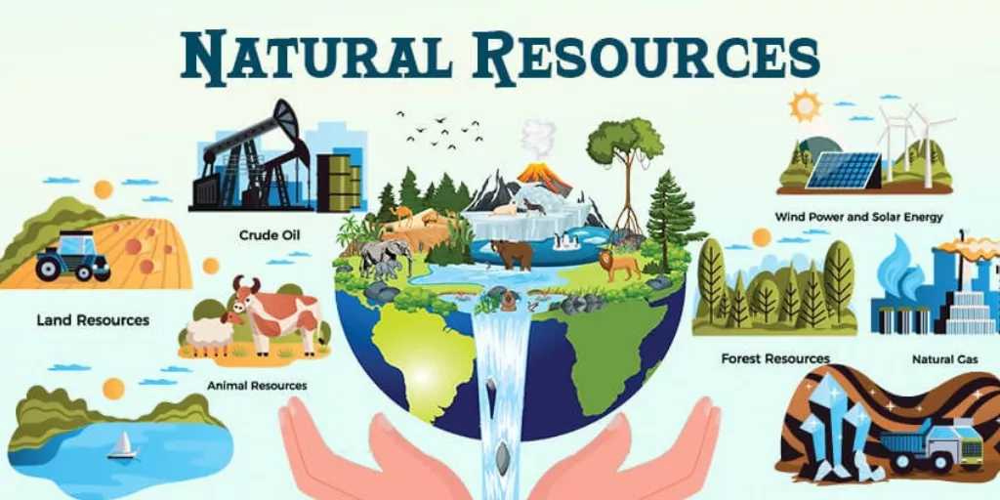

Natural resources are the valuable gifts that we get directly from nature, and they play an essential role in supporting life on Earth.
These resources include water, air, soil, forests, minerals, animals, and energy from the sun.
They help us in many ways: we use water for drinking, farming, and cleaning; we use forests for wood, fresh air, and wildlife; and we use minerals and fuels for transportation, electricity, and modern technology.
Natural resources are generally divided into two main categories.
Renewable resources, such as sunlight, wind, plants, and water, can be replaced naturally over time.
Non-renewable resources, like coal, petroleum, natural gas, and metals, take millions of years to form, so once they are used up, they cannot be easily replaced.
Today, many natural resources are under threat because of overpopulation, pollution, deforestation, and careless human activities.
As a result, rivers are getting polluted, forests are disappearing, and many animal species are becoming endangered.
To protect these precious resources, we must practice conservation, reduce waste, recycle materials, and use eco-friendly energy sources like solar and wind power.
If we take care of nature today, we can ensure that future generations will also have access to clean water, fresh air, healthy forests, and a safe environment to live in.
